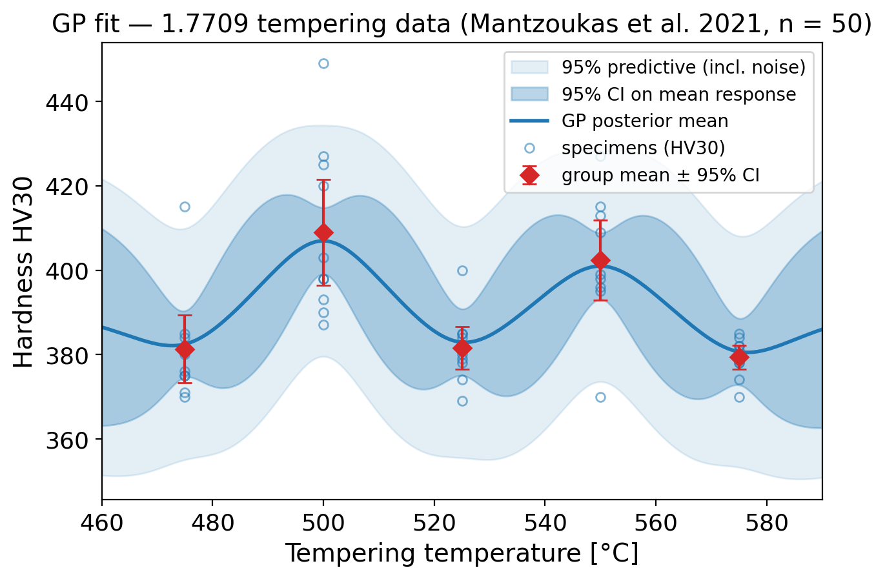
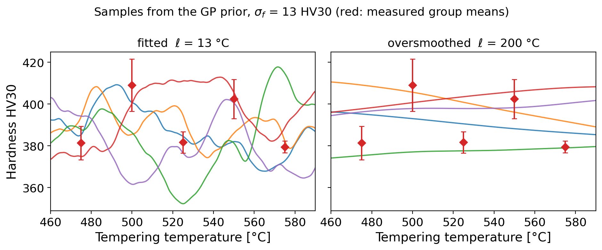
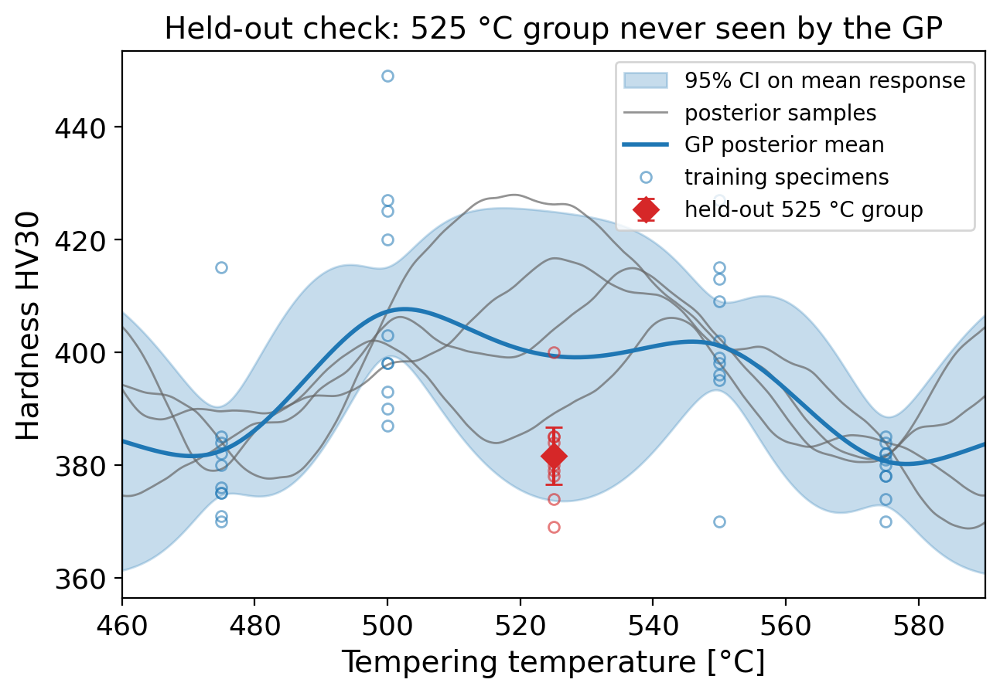
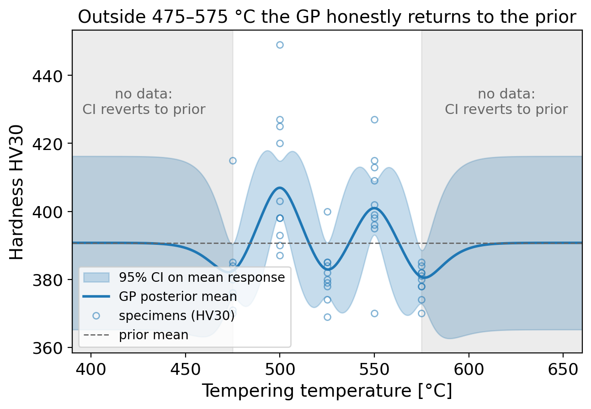
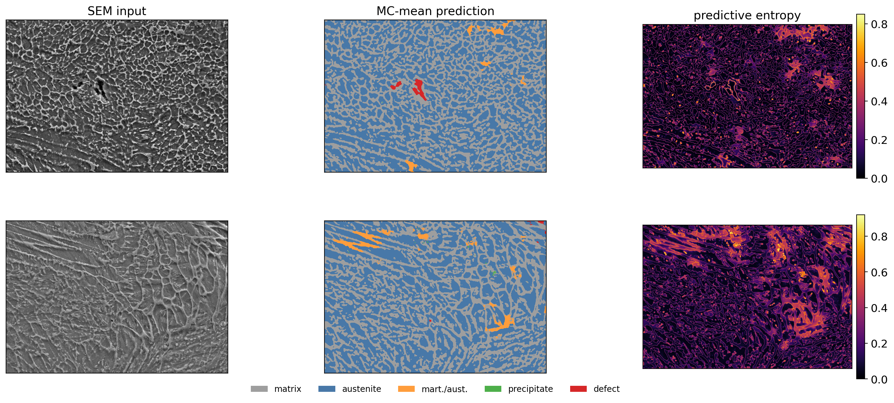
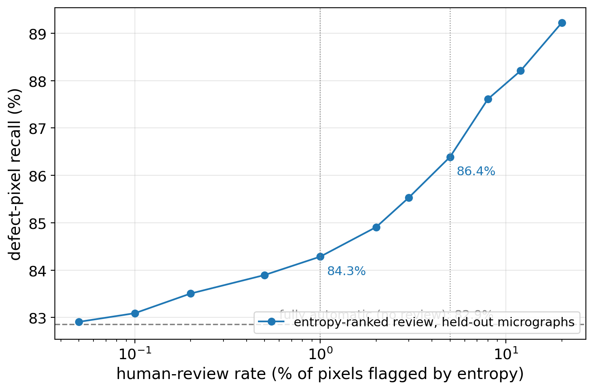
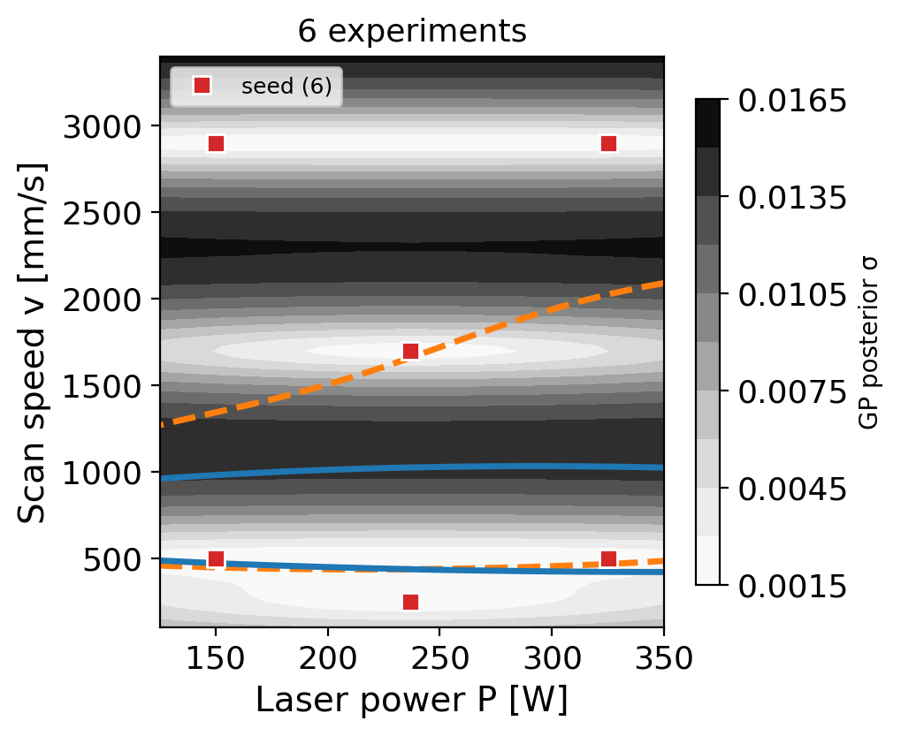
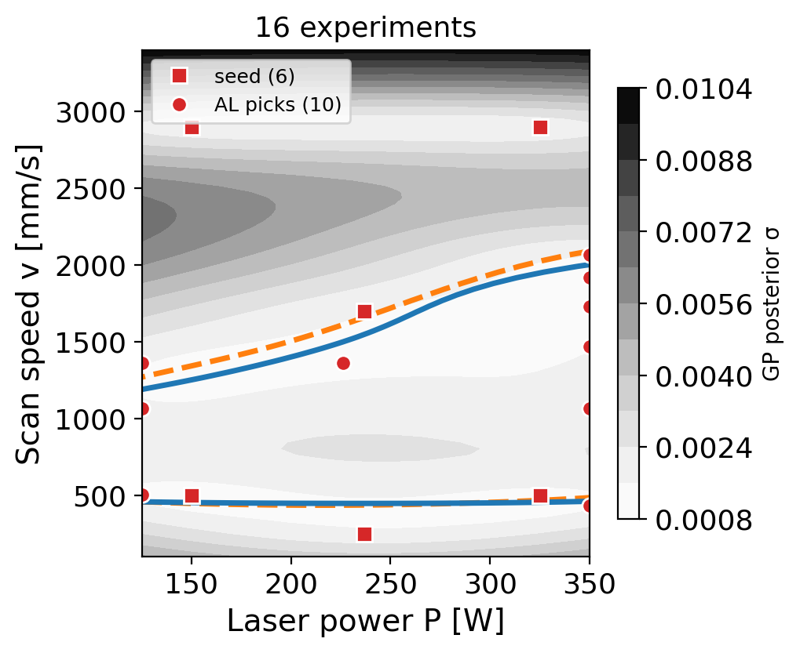
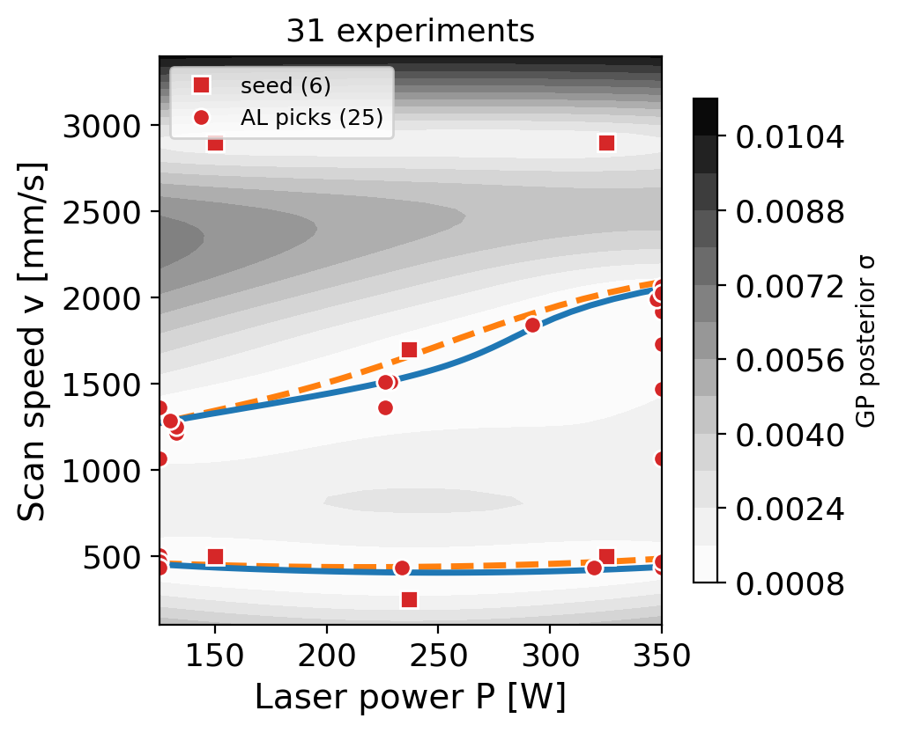
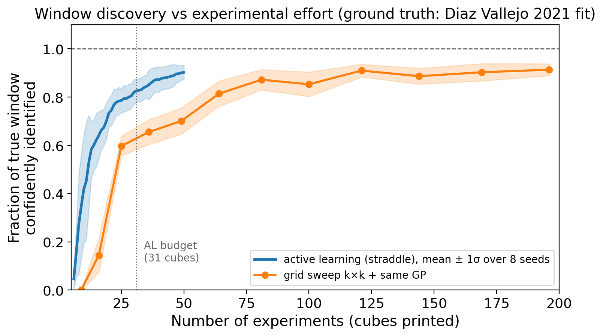

Machine Learning for Characterization and Processing
Unit 12: Uncertainty-aware regression & Gaussian Processes
AI 4 Materials / KI-Materialtechnologie
Prof. Dr. Philipp Pelz
FAU Erlangen-Nürnberg


§A · From MFML theory to lab practice
01. MFML W12 recap — we use these, we do not re-derive them
| Method | One-line summary | When to reach for it |
|---|---|---|
| Gaussian Process | Closed-form Bayesian regression over functions | Small \(n\) (\(\lesssim 10^3\)), tabular, smooth response, need calibrated CI |
| MC Dropout | Keep dropout on at inference, sample \(T\) passes | Big NN already trained, cheap epistemic estimate per pixel/voxel |
| Deep ensembles | Train \(M\) independent NNs, use disagreement | Best-calibrated NN UQ; budget for \(M\times\) training |
| MDN | NN outputs \((\pi_k, \mu_k, \sigma_k)\) of a Gaussian mixture | Multi-modal output (phase A or phase B from the same input) |
| Calibration | Reliability diagram + temperature scaling | Mandatory before any deployed model |
Note
We are not re-deriving the math. See MFML W12 for posteriors, ELBO, marginal likelihood. Today: which tool, on which lab task, with which numbers.
02. Why UQ matters in characterization & processing labs
- One wrong tensile-strength call on a structural part: recall, scrap, or worst case a failure in service.
- One missed crack/pore in an SEM screen: a defective batch ships.
- A point estimate without a confidence band is not a deliverable to a lab manager or a certifying body.
- Engineering decisions are threshold decisions — accept/reject, retest/release, explore/exploit.
- A threshold needs a distribution, not a number.

Note
Trust = prediction + calibrated confidence. The “calibrated” word is what most published materials-ML papers skip.
03. Two pain points unique to materials labs
(a) Tool / operator / coating domain shift
- The training set was acquired on SEM #1 with operator A and a 5 nm Au coating.
- Inference happens on SEM #2, operator B, no coating, on Tuesday after a chamber vent.
- Your softmax does not know any of that. Your uncertainty had better grow.
(b) Experiments cost €1k+/h
- Analytical S/TEM, AM build chambers, Gleeble dilatometry: each new label is hours of instrument time and days of prep.
- UQ is not a publication ornament — it is the input to the next experiment: active learning only works if uncertainty is honest and spatially resolved.
Warning
A model that gets quieter as the input drifts is broken — under tool, operator, or coating shift your uncertainty must grow.
§B · Picking a UQ method per lab task
04. Decision table — task → method → cost
| Lab task | Recommended UQ | Rationale | Cost driver |
|---|---|---|---|
| Tabular regression, \(n \in [10, 300]\) (composition \(\to\) property) | GP, RBF or Matérn \(\nu{=}5/2\) | Closed-form CI, smooth response, hyperparams interpretable | \(O(N^3)\) once — fine for \(N \lesssim 10^3\) |
| Pixel-wise segmentation of microscopy (CNN, U-Net) | MC Dropout, \(T \approx 30\) | Reuse trained net, get per-pixel variance map | \(T\times\) inference per image |
| High-stakes property regression with budget for retraining | Deep ensemble, \(M \in [5, 10]\) | Best calibration in literature (Lakshminarayanan et al. 2017) | \(M\times\) training |
| Multi-modal output (one input, two phases possible) | MDN, \(K \in \{2,3\}\) | Bimodal \(p(y\|x)\) — mean is meaningless | One training, harder to fit |
| Any deployed model | Reliability diagram + temp scaling | Free, post-hoc, on a held-out cal set | Trivial |
Note
Every row except the MDN is post-hoc — you can bolt it onto an already-trained model. The calibration row is mandatory on top of all the others.
05. Materials-specific computational budgets
Training-time vs inference-time tradeoff is more loaded in a lab than in webscale ML:
- Deep ensemble — cheap at inference (run \(M\) small NNs, average), expensive at training (\(M\times\) wall-clock + carbon). Acceptable when training is one-off and the model is shipped to many labs.
- MC Dropout — cheap at training (one network), expensive at inference (\(T\times\) forward passes). Acceptable on a benchtop where you process tens of images per day; not acceptable for a real-time inline detector.
- GP — both small at the scales we operate (\(N \lesssim 1000\)). Recompute per dataset; trivially cheap at inference.
Warning
MC Dropout’s variance estimate degrades with very deep nets and very low dropout rates — it can collapse to near-zero variance and look overconfident. Always validate with a held-out reliability diagram.
06. What to not do
- Do not quote raw softmax probability as “model confidence” — modern deep nets are systematically overconfident; a 0.97 softmax on an out-of-distribution micrograph is meaningless (Guo et al. 2017).
- Do not report the variance of a single ensemble member’s Monte-Carlo dropout passes and call it ensemble uncertainty — you are mixing two distinct UQ techniques and double-counting.
- Do not report a GP fit without showing the prior (kernel choice, length-scale prior). The kernel is the model. Hiding it makes the CI uninterpretable.
- Do not report any UQ number without a reliability diagram on a held-out calibration set.
Warning
All four anti-patterns share the same antidote: a reliability diagram on a held-out, lab-realistic calibration set.
§C · Case study A — GP for process→property mapping
07. Setup: 21CrMoV5-7 quench-and-temper
- Steel grade DIN 1.7709 / 21CrMoV5-7 (Mantzoukas et al. 2021).
- Process: austenitize 960 °C / 30 min, oil quench, temper 2 h at variable \(T_{\text{temper}}\).
- Input: \(T_{\text{temper}} \in \{475, 500, 525, 550, 575\}\) °C.
- Output: hardness HV30 (six indents per specimen, averaged); \(379\text{–}409\) HV30 \(\approx 38.7\text{–}41.7\) HRC.
- Real published dataset: 5 temperatures × 10 specimens = 50 values, published to the last indent (Table 3 of the paper;
data_mantzoukas2021_table3.csv).
Why this is a textbook GP problem:
- \(n\) small, \(d{=}1\) input, real cost per specimen.
- Response is not monotonic: secondary-hardening peaks at 500 and 550 °C (Cr/Mo/V carbide precipitation) — a parametric “softening curve” fit would be wrong.
- 10 replicates per condition → the noise level \(\sigma_n\) can be estimated from the data, independent of the model.
Note
Small \(n\), one physical input, replicate scatter, non-trivial shape — the textbook regime for a GP.
08. Why GP fits this lab task
- \(n = 50\): too small for a deep net to give honest uncertainty, plenty for a GP.
- Matérn \(\nu{=}5/2\) encodes “smooth response with a finite correlation length” — the right inductive bias for precipitation kinetics.
- The GP delivers what the lab manager wants: \(\hat{y}(T) \pm 2\sigma(T)\), narrowing at sampled \(T\), widening between.
- Fitted to Table 3: \(\sigma_n = 13.4\) HV30 fixed from the replicates; \(\sigma_f = 13\) HV30 by maximum likelihood; \(\ell = 13\) °C by MAP (next slide). See MFML W12 for the marginal-likelihood formula — we use the result.

Note
At \(n = 50\) the GP’s posterior CI is honest by construction — the leave-one-out check on this fit gives 92% empirical coverage for the 95% band (slide 10).
09. Kernel choice — what the hyperparameters mean physically
\[ k_{\text{RBF}}(T, T') = \sigma_f^2 \exp\!\left(-\frac{(T - T')^2}{2\,\ell^2}\right) \]
- Length scale \(\ell\): the “characteristic process variability” on the temperature axis.
- Fitted here: \(\ell \approx 13\) °C → the secondary-hardening peaks are narrower than the 25 °C sampling grid.
- \(\ell \approx 200\) °C → prior samples are near-straight trends; the peaks at 500/550 °C are oversmoothed away.
- Signal variance \(\sigma_f^2\): amplitude of the hardness variation across the window — fitted \(\sigma_f = 13\) HV30, matching the \(\sim\) 30 HV30 peak-to-valley swing.

- Noise variance \(\sigma_n^2\): instrument + specimen scatter at fixed \(T\). Estimated from the 10 replicates per group and fixed: \(\sigma_n = 13.4\) HV30. Do not let the optimizer absorb model misfit into noise.
Note
For metallurgical responses with regime changes, prefer Matérn \(\nu{=}5/2\) over RBF — it is once-differentiable instead of \(C^\infty\), which matches the physics better.
10. The fit — and its held-out test
- Posterior mean: flat around 380 HV30 with two secondary-hardening peaks (407 at 500 °C, 401 at 550 °C).
- 95% CI ribbon on the mean: tight (\(\pm 8\) HV30) at the five sampled tempers, widens to \(\pm 19\) HV30 mid-gap — the ribbon breathes with the data.
- Leave-one-specimen-out check on the full fit: 46/50 = 92% of specimens inside the nominal 95% predictive band.
Held-out check (figure). Refit with the entire 525 °C group hidden: the GP predicts \(399 \pm 26\) HV30 (95%) there; the hidden group measured \(382 \pm 5\) — inside the band. The interval is wide because the neighbouring peaks make interpolation genuinely uncertain. That width is information, not weakness.

Note
Trust the ribbon only after a held-out or leave-one-out check says you may — here: 92% empirical coverage for a 95% band.
11. When to trust extrapolation — and when not to
- The GP variance grows back toward \(\sigma_f^2\) as we move away from data.
- For the 1.7709 data: the ribbon balloons outside \([475, 575]\) °C — the model is honestly saying “I have not seen tempers below 475 or above 575, my prediction here is essentially the prior.”
- And the prior mean (391 HV30, the data average) is physically wrong out there: below 475 °C the real response climbs toward the as-quenched \(42 \pm 2\) HRC; above 575 °C tempering-back sets in. The wide band is the only honest part of the extrapolation.

- This is the right answer. Do not clip the variance, do not force-fit a parametric extrapolation. If you need predictions at 625 °C, run the experiment
Warning
The CI growth is only honest if the kernel is correct. A too-long \(\ell\) will make the GP overconfident outside the data. Always cross-check with a held-out CV reliability diagram before you trust extrapolation.
12. What this enables — direct ROI
- Pre-GP workflow: 6 destructive tensile + hardness tests per heat treatment recipe, 4 recipes, 24 tests at €200/test → €4 800.
- Post-GP workflow: 3 anchor tests + GP interpolation. CI verified, sufficient for spec compliance on standard heats. 12 tests, €2 400.
- Saved per heat-treatment campaign: ~€2 400. Across a year of campaigns: into the tens of thousands.
- Cost of the GP: half a day of analyst time, no infrastructure.
Warning
Caveat: the GP does not replace verification at the spec extremes. It replaces redundant tests in the smooth interior of the process window.
13. Modern small-tabular alternative: TabPFN
- TabPFN (Hollmann et al. 2025) is a transformer pre-trained on millions of synthetic tabular tasks to do in-context prediction — no per-task fitting.
- Pass your 50 rows + new query → it returns a calibrated posterior predictive in one forward pass.
- 2025 version (
v2) handles up to \(\sim 10\,000\) rows and is competitive with tuned XGBoost on small-tabular benchmarks. - Code:
github.com/PriorLabs/TabPFN—pip install tabpfn, scikit-learn-compatible API.
When the GP still wins:
- 1-D smooth process variable + interpretable hyperparameters (length scale = physical correlation length).
- You need the posterior closed-form for downstream optimisation (BO acquisition functions, gradient w.r.t. inputs).
- You need to encode prior physics (Matérn smoothness, periodic kernels for cycling processes).
Note
On a 50-row task like the 21CrMoV5-7 data, expect TabPFN and a disciplined GP to give comparable held-out error; the GP wins on interpretability of \(\ell\) and \(\sigma_f\) and on encoding the replicate-based \(\sigma_n\). Use whichever your stakeholder will sign off on — try it as a homework exercise against data_mantzoukas2021_table3.csv.
§D · Case study B — MC Dropout for SEM defect segmentation
14. Setup: U-Net on SEM micrographs
- Task: per-pixel segmentation of SEM micrographs of an additively manufactured steel into {matrix, austenite, martensite/austenite, precipitate, defect} — the public MetalDAM set (ArcelorMittal and DaSCI Andalusian Research Institute 2021; Luengo et al. 2022).
- Architecture: U-Net with dropout layers (\(p \approx 0.2\)) in the bottleneck and decoder.
- Training data: 42 expert-segmented micrographs \(\to\) \(\mathcal{O}(10^3)\) 256×256 tiles; whole micrographs held out for evaluation. The second tool (“SEM #2”) is simulated below by a detector gamma/contrast/noise shift — MetalDAM is single-source.
- The point estimate (argmax over softmax) is fine on the training distribution and bad on the deployment distribution. We need a per-pixel uncertainty map to flag the bad regions.
- Hands-on: reproduce this entire case study in the Week-13 notebook — Colab-ready, data via
ai4mat.datasets.MetalDAMDataset.
Warning
Always evaluate on a session or tool you did not train on — a random split of one SEM session hides exactly the drift that breaks deployment.
15. MC Dropout in practice
- Training: standard, dropout active.
- Inference: keep dropout on, run \(T = 30\) stochastic forward passes per image.
- Per pixel \(i\): collect \(\{p_i^{(t)}\}_{t=1}^{T}\) — softmax distributions over classes.
- Predictive mean: \(\bar{p}_i = \tfrac{1}{T}\sum_t p_i^{(t)}\) → argmax for the class label.
- Per-pixel predictive entropy: \(H_i = -\sum_c \bar{p}_{i,c} \log \bar{p}_{i,c}\) — the uncertainty map.
Note
\(T{=}30\) is the typical knee — below 10 the variance estimate is too noisy, above 50 you are paying for diminishing returns. Validate \(T\) on a held-out reliability diagram.
16. Per-pixel uncertainty maps — what they look like

Note
These are diagnostic: the model is honestly uncertain exactly where a human operator would also hesitate. On your own instrument, FoV/tile edges and charging halos light up the same way.
17. Reject-for-human-review threshold
- Pick a per-pixel entropy threshold \(\tau\). Pixels with \(H_i > \tau\) are flagged for operator review; the rest are auto-classified.
- Sweep \(\tau\) to draw the operating curve: (human-review rate) on the x-axis vs (defect recall) on the y-axis.
- The threshold is a business decision, not an ML decision — it depends on the cost of a missed defect vs the cost of operator time.

Note
Report the operating curve, not a single threshold — the deployment context picks the operating point.
18. Tool-shift calibration
- The reliability diagram on SEM #1 (training tool) is well-calibrated.
- The reliability diagram on SEM #2 (different detector, different bias) is not — the model is overconfident on a slightly different contrast distribution.
- Practical fix: per-tool temperature scaling. Collect a small (~50 image) calibration set on the new tool, fit a single scalar \(T\) to recalibrate. Cheap, post-hoc, no retraining.
- Re-run calibration after any: detector swap, gun replacement, sample-coating change, large chamber vent.
Note
“My segmentation accuracy dropped after the chamber vent” is a calibration failure as often as a model failure. Diagnose with a reliability diagram before retraining.
§E · Case study C — Active learning loop for AM process windows
19. Setup: laser powder-bed fusion process map
- Process: laser powder-bed fusion (L-PBF) of 316L stainless steel, fixed layer thickness (30 µm) and hatch spacing (120 µm).
- Two-axis design space: laser power \(P \in [125, 350]\) W and scan speed \(v \in [100, 3400]\) mm/s — the ranges of the 35-cube dataset of Diaz Vallejo et al. (2021) that grounds this case study.
- Goal: identify the process window — the region in \((P, v)\) where relative density \(\rho_{\text{rel}} > 0.995\): below it, keyhole porosity (low \(v\)); above it, lack-of-fusion porosity (high \(v\)).
- Each experiment: print a \(\sim 5\) mm cube, cross-section, measure \(\rho_{\text{rel}}\) — about €300 in materials, machine time, and metallography.
Note
Every point in the \((P, v)\) plane costs €300 — the experiment budget, not the model, is the scarce resource.
20. The active-learning loop
- GP surrogate: \(\rho_{\text{rel}}(P, v)\) with a 2-D RBF or Matérn kernel, separate length scales \(\ell_P, \ell_v\).
- Acquisition function:
- Upper Confidence Bound: \(\alpha_{\text{UCB}}(P,v) = \mu(P,v) + \beta\,\sigma(P,v)\).
- Expected Improvement: \(\alpha_{\text{EI}}\) favours points likely to beat the current best.
- Choose the next experiment to maximize \(\alpha\) — trade off mean (exploitation) vs variance (exploration) (Hernández-Lobato et al. 2014).
Note
Honest \(\sigma\) is what makes the exploration–exploitation trade fair — a miscalibrated surrogate sends the €300 experiments to the wrong place.
21. Closed loop with the printer + safety constraints
- Hard constraints the acquisition cannot violate:
- \(P/v\) ratio — prevent keyhole regime that damages optics.
- Absolute caps — machine specs.
- “No-go” zones from prior failures — flagged manually.
- Constrained Bayesian optimization: \(\max_{(P,v)} \alpha(P,v)\) subject to \(g_k(P,v) \leq 0\).
- Implementation: rejection sampling on the candidate set, or a second GP modeling the constraint probability.
- Budget cap: stop the loop after \(N_{\max} = 30\) experiments or when the process-window area stabilizes — whichever comes first.
Warning
Safety constraints must be hard constraints — a soft penalty that “usually” avoids the keyhole regime will eventually damage the optics.
22. Visualizing AL vs Grid: How does active learning discover the process window?
- Plot: x-axis = number of experiments; y-axis = area of process window confidently classified (\(P[\rho_{\text{rel}} > 0.995] > 0.9\)).
- Mechanism: AL curve rises steeply — acquisition functions (UCB / EI / straddle) steer experiments straight to the window boundary.
- Grid-search baseline: \(14 \times 14 = 196\) experiments to cover the design at matching resolution; AL requires far fewer.



Note
Active learning beats grid search — the actual lab default, not just random sampling.
23. AL Efficiency: Headline numbers & cost savings
- Campaign results (8 seeds): 31 AL cubes confidently identify 83% ± 5% of the true window; a \(9 \times 9 = 81\)-cube grid is needed to match.
⇒ ~2.6× reduction in experimental cost. - Budget impact: At €300/experiment: €15,000 saved per material.
And, savings increase further in higher dimensions (add hatch, preheat…).
- Why not just dense sampling (grid or Latin hypercube) + GP fit?
That gives a map — but not a sharp boundary.
AL is built to find boundaries by sampling where uncertainty is highest.
Note
The real benchmark is grid search, not random sampling. AL outperforms the common lab practice and accelerates discovery.
23. The effort curve — AL vs grid, 8 random campaigns
- \(y\)-axis: fraction of the true window area confidently identified — \(P[\rho_{\text{rel}} > 0.995] > 0.9\) and actually inside the window.
- Shaded bands: \(\pm 1\) std over 8 random campaigns (jittered seed designs + fresh measurement noise) — single-seed AL curves are not evidence.

Note
The AL advantage is the steep early slope — under a hard experiment budget you stop exactly in the regime where AL is far ahead of the grid.
24. Materials-acceleration-platform framing
- This loop — surrogate model + acquisition + closed-loop instrument + safety constraints — is the prototype of a self-driving lab.
- Aspuru-Guzik and Berlinguette groups have built versions of this loop for catalysis and thin-film electrochemistry. Same pattern, different instrument (Hernández-Lobato et al. 2014).
- The only ingredient that makes this work is honest UQ. With overconfident or miscalibrated \(\sigma\), the acquisition function picks the wrong next experiment and you waste your budget. UQ is not a slide at the end — it is the engine.
Warning
With a miscalibrated \(\sigma\) the loop still runs — it just spends your budget on the wrong experiments, and nothing in the loop’s output tells you.
§F · Calibration & deployment hygiene
25. Reliability diagrams on lab data
- Bin predictions into 10 confidence bins. For each bin, compare predicted confidence vs observed accuracy (or coverage of the CI).
- Perfect calibration: diagonal.
- Above the diagonal: under-confident. Below: over-confident (the dangerous failure mode).
- Where typical materials models break:
- Out-of-distribution alloy family — model is highly confident, accuracy collapses.
- Different microscope / coating / operator — softmax stays at 0.95+, accuracy drops 20 points.
- Long-tail rare defect classes — confidence is high on the wrong class.
Warning
Always run a reliability diagram on a held-out, lab-realistic calibration set — not a random split of the training data.
26. OOD detection — when the model sees something new
- Symptoms: confidence is high, prediction is wrong. Calibration alone cannot save you — you need to detect the OOD case and refuse to predict.
- Workflow: train your model, fit a Mahalanobis detector on training features, reject any inference with detector score above a threshold and route to a human.
Practical detectors:
- Mahalanobis distance in feature space (penultimate-layer activations vs the training-set Gaussian) — cheap, surprisingly effective on microscopy.
- Ensemble disagreement — for a deep ensemble, high prediction variance across members \(\Rightarrow\) OOD. Free if you already have an ensemble.
- GP variance — for GP surrogates, \(\sigma^2 \to \sigma_f^2\) flags inputs far from training. This is the same mechanism as the AL loop in §E.
Note
Calibration and OOD detection are separate responsibilities — a perfectly calibrated model still needs a detector that refuses to predict off-distribution.
27. Reproducibility hygiene
- Random seed logged for: data split, model init, dropout sampling, ensemble members, BO acquisition.
- Model card alongside the model artifact: training data version, test metrics, calibration plot, OOD detector ROC, list of known failure modes.
- Dataset version pin: hash of the labeled set; never silently update.
The one-paragraph “uncertainty section” of a model card:
“Uncertainty is reported as 95% CIs from \(T{=}30\) MC-dropout passes. The model is calibrated by temperature scaling on a 200-image held-out set; expected calibration error 0.03. The model is in-distribution iff Mahalanobis score \(<\tau_{\text{OOD}} = 14.2\); outside that, predictions are not returned.”
Note
If you cannot write that paragraph for your model, you cannot deploy it.
28. What MFML covers that we skipped
Pointer slide. If you want the math behind today’s tools:
MFML W12 (uncertainty in predictions):
- Bayesian predictive distribution and the variance decomposition (aleatory + epistemic).
- Marginal likelihood / evidence framework as automatic Occam’s razor.
- Closed-form GP posterior (mean + variance), kernel hyperparameter learning by log marginal likelihood.
- ELBO and variational interpretation of MC Dropout.
- Calibration formalism (reliability, ECE) and recalibration methods (temperature scaling, Platt, isotonic).
MFML W8 (tree ensembles & tabular):
- TabPFN’s prior-data fitted network — what the pre-training prior actually is.
- In ML-PC: we use these results on real lab data. Pick the right tool, validate it on a reliability diagram, and trust the answer enough to skip a destructive test or pick the next experiment.
Note
Read the MFML math first, then deploy with this deck open — the reverse order produces copy-pasted snippets with no diagnostic intuition.
§G · Wrap
29. Recap: Unit 12
- Pick the UQ tool per task: GP or TabPFN for small tabular data, MC dropout for trained CNNs, ensembles for high-stakes regression, MDN for multi-modal outputs.
- Calibrate before deploying — a reliability diagram on a held-out lab-realistic set is non-negotiable.
- UQ enables active learning — and active learning is how labs scale beyond the brute-force grid search.
- OOD detection complements calibration — confidence is meaningless when the input is outside the training distribution.
- The math lives in MFML W12 (Bayes, GP, calibration). ML-PC W13 is about using that math to save tests, find process windows, and ship trustworthy models.
Note
A model without calibrated uncertainty fails silently; a model with it tells you exactly which experiment to run next.
Continue
30. References & further reading
- Mantzoukas et al. (2021) — 21CrMoV5-7 quench-and-temper data used in §C (Mantzoukas et al. 2021).
- Modarres et al. (2017) — SEM benchmark for the segmentation/classification setup of §D (Modarres et al. 2017).
- Diaz Vallejo et al. (2021) — 316L L-PBF process-parameter/density dataset grounding the §E active-learning campaign (Diaz Vallejo et al. 2021).
- Gal & Ghahramani (2016) — MC Dropout as approximate Bayesian inference (Gal and Ghahramani 2016).
- Lakshminarayanan et al. (2017) — Deep ensembles, the empirical gold standard for NN UQ (Lakshminarayanan et al. 2017).
- Hernández-Lobato et al. (2014) — Predictive entropy search; foundational for BO/active learning in materials (Hernández-Lobato et al. 2014).
- Guo et al. (2017) — Modern NNs are miscalibrated; temperature scaling (Guo et al. 2017).
- Hollmann et al. (2025) — TabPFN v2, foundation model for tabular data (Hollmann et al. 2025).
- Rasmussen & Williams (2006) — GP reference text.
- Aspuru-Guzik & Berlinguette — self-driving lab perspective; materials-acceleration platforms.
- MFML W12 — full mathematical treatment of all methods used here.
ArcelorMittal, and DaSCI Andalusian Research Institute. 2021. MetalDAM: Metallography Dataset from Additive Manufacturing. https://github.com/ari-dasci/OD-MetalDAM.
Diaz Vallejo, N., C. Lucas, N. Ayers, K. Graydon, H. Hyer, and Y. Sohn. 2021. “Process Optimization and Microstructure Analysis to Understand Laser Powder Bed Fusion of 316L Stainless Steel.” Metals 11 (5): 832. https://doi.org/10.3390/met11050832.
Gal, Yarin, and Zoubin Ghahramani. 2016. “Dropout as a Bayesian Approximation: Representing Model Uncertainty in Deep Learning.” International Conference on Machine Learning, 1050–59. https://proceedings.mlr.press/v48/gal16.pdf.
Guo, Chuan, Geoff Pleiss, Yu Sun, and Kilian Q. Weinberger. 2017. “On Calibration of Modern Neural Networks.” International Conference on Machine Learning, 1321–30.
Hernández-Lobato, José Miguel, Matthew W. Hoffman, and Zoubin Ghahramani. 2014. “Predictive Entropy Search for Efficient Global Optimization of Black-Box Functions.” Advances in Neural Information Processing Systems 27.
Hollmann, Noah, Samuel Müller, Lennart Purucker, et al. 2025. “Accurate Predictions on Small Data with a Tabular Foundation Model.” Nature 637: 319–26. https://doi.org/10.1038/s41586-024-08328-6.
Lakshminarayanan, Balaji, Alexander Pritzel, and Charles Blundell. 2017. “Simple and Scalable Predictive Uncertainty Estimation Using Deep Ensembles.” Advances in Neural Information Processing Systems 30. https://papers.nips.cc/paper_files/paper/2017/hash/9ef2ed4b7fd2c810847ffa5fa85bce38-Abstract.html.
Luengo, Julián, Raúl Moreno, Iván Sevillano, et al. 2022. “A Tutorial on the Segmentation of Metallographic Images: Taxonomy, New MetalDAM Dataset, Deep Learning-Based Ensemble Model, Experimental Analysis and Challenges.” Information Fusion 78: 232–53. https://doi.org/10.1016/j.inffus.2021.09.018.
Mantzoukas, John, Dimitris G. Papageorgiou, Carmen Medrea, and Constantinos Stergiou. 2021. “Hardness Behavior of W. Nr. 1.7709 Steel, Oil Quenched and Tempered Between 475–575 c.” MATEC Web of Conferences 349: 02005. https://doi.org/10.1051/matecconf/202134902005.
Modarres, Mohammad Hadi, Rossella Aversa, Stefano Cozzini, Regina Ciancio, Angelo Leto, and Giuseppe Piero Brandino. 2017. “Neural Network for Nanoscience Scanning Electron Microscope Image Recognition.” Scientific Reports 7: 13282. https://doi.org/10.1038/s41598-017-13565-z.

© Philipp Pelz - ML for Characterization and Processing